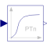

CriticalDampingOutput the input signal filtered with an n-th order filter with critical damping |

|
Information
This information is part of the Modelica Standard Library maintained by the Modelica Association.
This block defines the transfer function between the input u and the output y as an n-th order filter with critical damping characteristics and cut-off frequency f. It is a slightly simplified version of the Modelica.Blocks.Continuous.CriticalDamping block. It doesn't provide the same initialization capabilities as the continuous block, since the initialization of clocked partitions is currently performed differently to the continuous time partitions.
Parameters (3)
| n |
Value: 2 Type: Integer Description: Order of filter |
|---|---|
| f |
Value: Type: Frequency (Hz) Description: Cut-off frequency |
| normalized |
Value: true Type: Boolean Description: = true, if amplitude at f_cut is 3 dB, otherwise unmodified filter |
Outputs (1)
| x |
Type: Real[n] Description: Filter states |
|---|
Connectors (2)
| u |
Type: RealInput Description: Connector of Real input signal |
|
|---|---|---|
| y |
Type: RealOutput Description: Connector of Real output signal |
Used in Examples (1)
|
Modelica.Clocked.Examples.Systems Simple example of a mixing unit where a (discretized) nonlinear inverse plant model is used as feedforward controller |